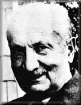

Philosophy Pages
| Dictionary | Study Guide | Logic | F A Q s | ||
|---|---|---|---|---|---|---|
| History | Timeline | Philosophers | Locke | |||
| Philosophy Pages
| Dictionary | Study Guide | Logic | F A Q s | ||
|---|---|---|---|---|---|---|
| History | Timeline | Philosophers | Locke | |||
|
Life and Works . . Nothing . . Being-There . . Metaphysics Bibliography Internet Sources |
After studying with Husserl, Martin Heidegger undertook an academic career in Germany, lecturing with great success both in Marburg and at the University of Freiburg, where he served as Rector in 1933-34.
During this period, Heidegger not only cooperated with the educational policies of the National Socialist government but also offered it his enthusiastic public support.
As a result, Heidegger was suspended from all teaching duties in the post-war era from 1945 to 1950.
 The nature and extent of his sympathies for Nazi ideology remain matters of some dispute.
The nature and extent of his sympathies for Nazi ideology remain matters of some dispute.
Heidegger's Sein und Zeit (Being and Time) (1927) applied the methods of phenomenology to ontology, in an effort to comprehend the meaning of "Being" both in general and as it appears concretely. This led Heidegger to a conception of human existence as active participation in the world, "being-there" {Ger. Dasein}, despite its inherent limitations and the threat of inauthenticity. H eidegger's most familiar themes are evident in The Basic Problems of Phenomenology (1927) and EinFührung in die Metaphysik (Introduction to Metaphysics) (1953).
"Hegel and the Greeks" is a sample of Heidegger's reflections on the history of philosophy.
|
Recommended Reading:
Primary sources:
Secondary sources:
Additional on-line information about Heidegger includes:
|